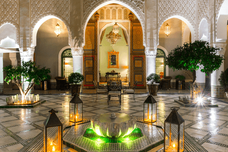

-
introduction:
cité millénaire, est la première ville orientale au Maroc fondée en 789 après JC par Idriss Ier, un descendant du prophète. connu pour etre la plus belle et la plus envoûtante médina du Maroc elle est sous forme d'un labyrinthe de 9.500 rues et d'un millier d'impasses grouillantes de petits marchands guidant leur marchandises. Les souks de Fès y regorgent de victuailles en tout genre ou abritent divers corps de métiers, un ancien caravansérail magnifiquement restauré héberge un musée du Bois où cèdres et arganiers se muent en portes somptueuses, coffres et étagères sculptées. Le musée des Arts marocains. On y trouve une remarquable collection de poteries en provenance de différentes villes et de différentes époques.
-
monuments historique:
LA MÉDERSA ATTARINE (école Attarine)
Construit sous le règne du Sultan Mérinide Abou Saïd Othman au XIVème siècle, ce monument historique de Fès a été récemment rénové à l'initiative du roi Mohammed VI, grâce au programme de restauration des monuments historiques de la Médina de Fès. Cette Médersa hébergeait à l'époque les étudiants de l'université de Karaouiyine, et on peut y découvrir lors de la visite un bassin dédié aux ablutions. Colorée et lumineuse, cette Médersa fait partie de l'art architectural Mérinide.
LA MOSQUÉE EL KARAOUIYINE
Cette mosquée a été fondée en l'an 862. Il s'agit de l'université la plus vieille du monde, autrement dit bien avant Oxford ou la Sorbonne. C'est dans cet établissement que se sont connus plus de 300 étudiants, qui étudiaient la justice, la théologie, le notariat, etc. Ce monument historique de Fès par l'une des 14 portes d'entrée, et intègre sa bibliothèque, qui abrite pas moins de 30 000 volumes, donc 10 000 entièrement manuscrits.
la tannerie chouara
la tannerie chouara vieille de près de mille ans et est une des plus célèbres du pays elle se compose de nombreux vases en pierre remplis avec une vaste gamme de teintures et de liquides divers répandus comme une grande palette d'aquarelles. Des dizaines d'hommes, dont beaucoup sont debout jusqu'à la taille dans les colorants. Les tanneries traitent les peaux de vaches, de moutons, de chèvres et de chameaux, les transformant en articles en cuir de haute qualité tels que des sacs, manteaux, chaussures et souliers. Tout cela est réalisé à la main, sans nécessité l'utilisation de machines modernes, et le processus n'a que très peu changé
place Seffarine
La place Seffarine est l'une des places les plus authentiques de Fès. Cette place triangulaire qui abrite la bibliothèque Al Qaraouiyine est surtout connu pour ses dinandiers martelant le cuivre pour y fabriquer plats et ustensiles A deux pas se trouve Chouara, le fameux quartier des tanneurs situé le long de l'oued Fès : de nombreuses boutiques de cuir cotoient les ateliers de traitement des peaux à ciel ouvert, du nettoyage à la chaux à la teinture des cuirs.
-
les familles de fes(les Fassis):
Les familles anciennes de Fès sont appelées Ahl Fas ou plus communément Les Fassis. Proches du pouvoir du Sultan, ces familles constituent depuis des siècles l'aristocratie, l'élite politique, et financière du Maroc. Les Fassis conservent leurs spécificités culturelles, héritiers d'une citoyenneté ancienne où se mêlent la culture musulmane, les traditions andalouses et un savoir-vivre spécifique Par leur présence dans la capitale et leur éducation, les familles fassies ont toujours joué un rôle politique clé dans l'histoire du Maroc médiéval. Leurs origines remontent de 825 aprés JC où le sultan accueille des familles expulsées de Cordoue (actuelle Espagne) par exemple : Les Berrada d'origine andalouse. L'une des plus anciennes familles de Fès, et la première élite politique et financière du Maroc qui a été depuis toujours un allié fidèle a la famille royale.
-
la beauté de la ville
les riads
Symbolisent l'essence même de l'architecture des habitations traditionnelles marocaines. Ils sont généralement situés dans les médinas qui constituent les parties les plus anciennes des villes au Maroc, il s'inspire grandement de l'habitat arabo-andalou traditionnel, qui se présente à la fois comme un héritage romain et persan. De forme carrée ou rectangulaire, celui-ci s'arrange alors autour d'un patio central avec fontaine, d'un salon ou encore d'une salle à manger. Disposant d’un ou deux étages
la gastronomie marocaine fassi
La cuisine marocaine fassi a subi de multiples influences : arabo-andalouse et juive. On note également une influence des cuisines ottomane, d'Afrique subsaharienne et d'Asie elle offre une grande diversité de plats : couscous, tajine souvent agrémenté de fruits secs, pastilla enrichie aux amandes et noix, méchoui, briouats.